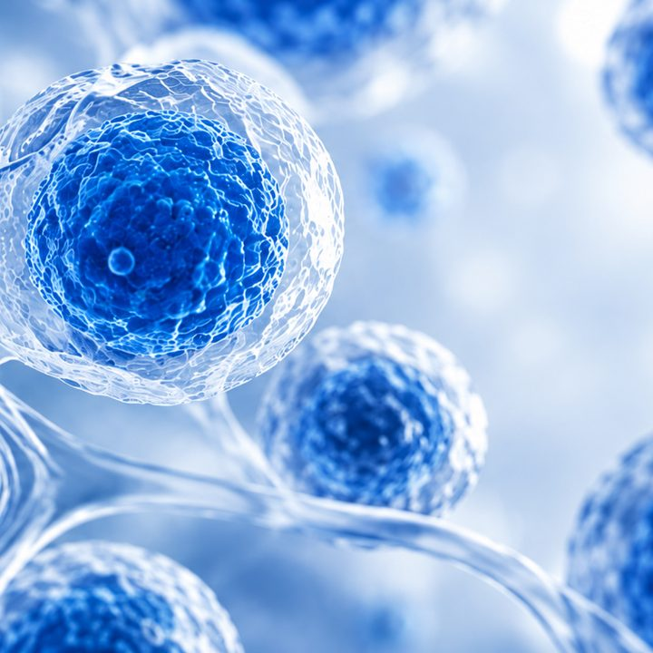
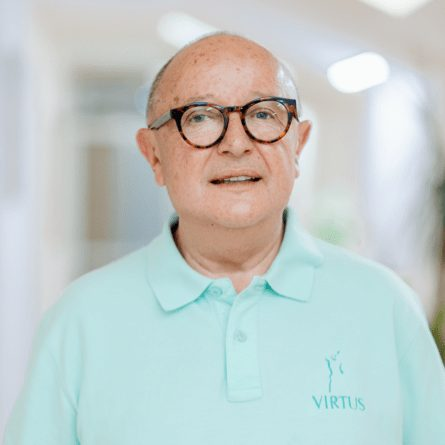
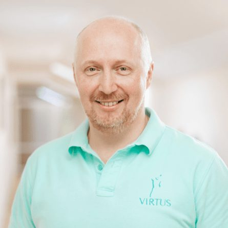
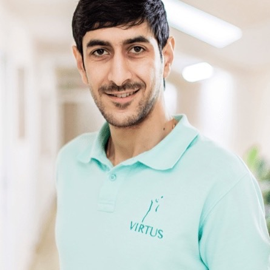
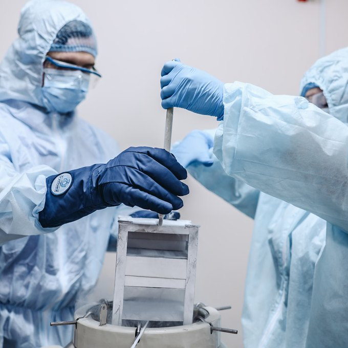

Біологічний вік: чому він важливіший за дату народження
Біологічний вік: чому він важливіший за дату народження
Клітинні технології SmartCell
Біотехнологічна компанія SmartCell на базі Інституту передової медицини VIRTUS з 2012 року займається розробкою і впровадженням інноваційних клітинних технологій, що застосовуються у регенеративній терапії.
Напрямок представлений в філіях:
- Одеса, Суднобудівна, 1Б
- Київ, Костянтинівська, 57

Напрямки клітинної терапії
- Урологія
- Судинна хірургія
- Anti-age терапія
-
- Корекція ліподистрофій (ямок та западин шкіри) в області сідниці
- Контурна пластика обличчя біоімплантатами з власних жирових клітин (збільшення губ, вилиць, заповнення носогубних і міжбрівних складок)
- Клітинні технології в лікуванні посттравматичних і післяопікових рубців і деформацій тіла
- Клітинні технології в лікуванні ускладнень традиційних пластичних операцій
- Лiпомоделювання
- Омолоджуючі операції у поєднанні з введенням фібробластів або стовбурових клітин
- Збільшення грудей власними стовбуровими клітинами у пацієнтів з недостатнім обсягом жирової тканини
- Контурна ринопластика власними жировими і стовбуровими клітинами
- Контурна ментопластика власними жировими і стовбуровими клітинами
- Відновлення слуху за допомогою клітинних технологій
- Відновлення голосу жировими клітинами
- Відновлення нюху кріолізатом тромбоцитів і стовбуровими клітинами
- Омолодження власними стовбуровими клітинами
- АМК-терапія
- Неофіброліфтинг (фібробласти)
- Лікування ускладнень традиційної контурної пластики та агресивних процедур
- Лікування рубців
- Об’ємна контурна пластика власними жировими клітинами
- Лікування наслідків вугрових висипів
- АМК-терапія
- Лікування синдрому сухого ока
- Лікування захворюваннь рогівки ока
- Відновлення зору після черепно-мозкових травм, інсультів, токсичного ураження ЦНС
- Лікування рецидивних форм халязиона
- Нехірургічне лікування глаукоми
- Безопераційне лікування початкових форм катаракти
- Лікування різних форм атрофії зорового нерва
- Лікування дистрофії сітківки (суха макулодистрофія)
- Відновлення дистрофії рогівки (після опіків і травм), запалення, операцій
- Лікування діабетичної ретинопатії
- Лікування вітіліго
- Лікування атопічного дерматиту
- Лікування червоного плоского лишаю
- Лікування екземи
- Лікування псоріазу
- Лікування вогнищевого нейродерміту
- Лікування бульозного епідермоліза
- Лікування васкулітів
- Лікування системного червоного вовчака
- Лікування системної склеродермії
- Сучасне відновлювальне лікування з використанням аутологічних стовбурових клітин
- Відновлення після COVID-19
- Відновлення після операцій на серці
- Відновлення після інфаркту
- Лікування постінфарктного кардіосклерозу
- Профілактика, лікування та відновлення після COVID-19
- Лікування кардіоміопатії (у тому числі алкогольної та ішемічної)
- Лікування міокардитів
- Лікування ішемічної хвороби серця
- Лікування інфаркту міокарда
- Лікування аритмії
- Клiтинне iнтимне омолодження
- Лікування клімаксу
- Лікування безпліддя (трансплантація ендометрія, трансплантація при яйцеклітині, яка не дозріває)
- Відновлення чутливості точки G
- Лікування нетримання сечі власними жировими клітинами
- Інтимна контурна пластика власними жировими клітинами
- Лікування крауроза
Наш пріоритет
Пластика створює форму. Клітини повертають шкірі молодість.
-

-

-

-
Досвідчений та чуйний лікар. Отримав змістовну консультацію та гарне ставлення. Звертався стосовно послуги плазмаферезу — гарний сервіс у безпечних та комфортних умовах.
- Філія VIRTUS
- Одеса, Суднобудівна, 1Б
- Напрямок
- Клітинні технології SmartCell
- Фахівець
- Лісовик Сергій Григорович
Відгук на сайті
-
Приїжджаємо з чоловіком у клініку на плазмаферез, не перший місяць. Дуже гарний лікар, фахівець своєї справи, завжди привітний — усе проходить швидко і без проблем.
- Філія VIRTUS
- Одеса, Суднобудівна, 1Б
- Напрямок
- Клітинні технології SmartCell
- Фахівець
- Лісовик Сергій Григорович
Відгук на сайті
-
Все виконано чудово.
- Філія VIRTUS
- Одеса, Суднобудівна, 1Б
- Напрямок
- Клітинні технології SmartCell
- Фахівець
- Лісовик Сергій Григорович
Відгук на сайті
-
Пояснили кожен крок і показали результат на УЗД. Це те, чого бракувало в інших клініках.
- Філія VIRTUS
- Київ, Костянтинівська, 57
- Напрямок
- Пластична хірургія
- Фахівець
- Кадочніков Сергій Валерійович
Відгук на сайті
-
Записалась на консультацію за рекомендацією. Лікар детально розібрав мою ситуацію, без нав'язування процедур.
- Філія VIRTUS
- Одеса, Суднобудівна, 1Б
- Напрямок
- Пластична хірургія
- Фахівець
- Саркісян Арман Грайрович
Відгук на сайті
Клітиннi технології – це перспективний напрямок медицини, що передбачає безпечне та ефективне лікування захворювань за допомогою власних клітин пацієнта.
Використання клітинних технологій в медицині дозволяє природним чином відновити структуру та функції пошкоджених органів і тканин, зменшити прояви старіння і покращити якість життя. За роки діяльності компанії SmartCell курс ефективної клітинної терапії пройшли вже понад 2500 пацієнтів Інституту VIRTUS.
У відділенні клітинних технологій проводять
- Лабораторні дослідження Перед проведенням клітинної терапії пацієнт проходить низку обстежень (біохімічних, імунологічних, мікробіологічних, вірусологічних), а також скринінгові онкологічні тести. Ретельна діагностика потрібна для того, щоб переконатися в ефективності та безпеці біоматеріалу пацієнта, оскільки з нього і будуть виготовлені клітинні препарати
- Культивування клітин і тканин людини Клітини, вирощені в лабораторії SmartCell, також піддаються генетичним, імунологічним, мікробіологічним та іншим видам спеціальних досліджень, що підтверджують їх безпеку. Лабораторія видає паспорт якості до кожного клітинного препарату, який отримує пацієнт перед початком лікування
- Кріогенне зберігання клітин
- Введення клітинних препаратів (системне або локальне) Під час омолоджуючих процедур клітинний препарат вводиться у шкіру обличчя, при лікуванні захворювань суглобів – у ділянку суглобів, при терапії системних захворювань – внутрішньовенно
Лікування захворювань за допомогою стовбурових клітин
Клітинна медицина та клітинні технології дозволяють ефективно та безпечно лікувати важкі захворювання, викликані ураженням органів. Стовбурові клітини мають унікальну властивість трансформуватися у будь-який тип клітин.
Після їхнього введення в організм відбувається поступове відновлення тканин і функцій ураженого органу, істотно зменшуються прояви захворювання, покращується самопочуття пацієнта. Використання стовбурових клітин у медицині дає можливість відновити нормальну роботу всього організму, уникнути розвитку ускладнень захворювання та підвищити якість життя пацієнта.
Лікування діабету стовбуровими клітинами допомагає відновити зруйновані тканини підшлункової залози та підвищити вироблення власного інсуліну. В результаті клітинної терапії потреба у введенні ін’єкцій інсуліну зменшується або зовсім зникає. Клітинні технології також застосовуються для лікування ускладнень цукрового діабету. Внаслідок захворювання страждає увесь організм, особливо судини, сітківка ока, нирки та нервова тканина. Клітинна терапія ускладнень діабету дозволяє відновити пошкоджені тканини та нормалізувати роботу організму.
Лікування цирозу печінки стовбуровими клітинами, особливо на ранній стадії, дає можливість природним чином відновити структуру та функції органу, не вдаючись до дороговартісної імплантації. Після введення стовбурових клітин відбувається регенерація пошкодженої печінки, відновлюються обмінні процеси в організмі.
Послуги та процедури відділення
Відділення клітинних технологій Інституту передової медицини VIRTUS надає такі послуги і процедури естетичної та регенеративної медицини:
- омолодження і відновлення організму стовбуровими клітинами; профілактика, лікування захворювань та їх ускладнень
- біострахування – створення і зберігання резерву стовбурових клітин, які можуть використовуватися для омолодження, лікування і відновлення організму після перенесених важких захворювань. Також у тих пацієнтів Інституту VIRTUS, шкіра яких ще не постраждала від вікових змін або захворювань, є унікальна можливість зберегти невеликий клаптик шкіри для лабораторного культивування фібробластів у майбутньому, коли буде потрібно повернути її здоров’я і молодість або попередити в’янення.
Клітинні технології також успішно застосовуються і в естетичній медицині для профілактики та корекції ознак старіння. В Інституті передової медицини VIRTUS є власна запатентована методика омолодження без операції – неофіброліфтинг. Введення аутологічних фібробластів у шкіру дозволяє відновити її щільність і пружність, вирівняти тон і розгладити зморшки. Ефект омолодження шкіри після процедури неофіброліфтингу наростає протягом 1,5 років і зберігається до 5 років.

Консультація щодо лікування стовбуровими клітинами
Лікування стовбуровими клітинами в Одесі в Інституті передової медицини VIRTUS починається з консультації пацієнта з лікарем (за потреби проведення естетичних процедур – дерматологом, косметологом). У випадку лікування захворювань консультацію проводить безпосередньо керівник клініки VIRTUS, доктор медичних наук, професор Володимир Олександрович Цепколенко .
За потреби у консультації можуть брати участь й інші фахівці клініки (гастроентеролог, невропатолог, ендокринолог) залежно від того, яке захворювання потрібно лікувати. Спільне рішення професора та вузьких спеціалістів дозволяє вибрати правильну та ефективну тактику лікування стовбуровими клітинами.
Після огляду пацієнта розраховують необхідну кількість клітинного препарату і кратність його введення для досягнення оптимального ефекту лікування. Потім лікар призначає пацієнтові перелік діагностичних досліджень, до якого входять:
- загальний і біохімічний аналізи крові
- аналіз сечі
- тести на ВІЛ і вірусний гепатит
- скринінгові онкологічні тести
Через 5-7 днів на повторній консультації лікар призначає пацієнтові дату забору клітин. Третій етап підготовки до лікування стовбуровими клітинами – забір біоматеріалу для культивування в лабораторії SmartCell. Він здійснюється досвідченим хірургом у операційній Інституту VIRTUS під місцевою анестезією.
Записатись на консультаціюПопулярні питання
Залишились питання? Відповідає лікар відділення.
Як зрозуміти, що є проблеми, які потребують лікування стовбуровими клітинами?
Клітинні технології у регенеративній медицині застосовують для усунення ознак старіння організму (погіршення пам’яті та працездатності, зниження лібідо, перепади артеріального тиску та інші). Стовбурові клітини використовуються також для лікування хронічних захворювань (діабет, аутоімунні захворювання центральної нервової системи, артроз, артрит та інші) і у разі неефективності інших видів терапії.
Які аналізи призначають перед лікуванням стовбуровими клітинами?
Перед початком лікування стовбуровими клітинами пацієнт здає аналізи крові (загальний і біохімічний), аналіз сечі, скринінгові онкологічні тести, а також аналізи на ВІЛ і вірусний гепатит.
Як готуватися до консультації лікаря?
При необхідності лікування хронічних захворювань пацієнтові на прийом рекомендовано взяти свою амбулаторну карту, в якій відображені усі аналізи та обстеження, а також методи лікування, які він отримував упродовж щонайменше останніх двох років.
Відгуки про лікарів відділення
Консультація
Лікування стовбуровими клітинами починається з консультації
Прийом веде керівник клініки, доктор медичних наук, професор Володимир Цепколенко.
Записатись на консультаціюНапрямок представлений у філіях
-
 VIRTUS · Інститут передової медицини
VIRTUS · Інститут передової медицини
Одеса, Суднобудівна, 1Б
- Пн–Пт 08:00–18:00
- Сб 09:00–17:00
- Нд вихідний
-
 Медичний інститут VIRTUS у Києві
Медичний інститут VIRTUS у Києві
Київ, Костянтинівська, 57
- Пн–Пт 09:00–18:00
- Сб 09:00–18:00
- Нд вихідний
Читайте в Smart Age Journal
Усі матеріали журналу-
 Біологічний вік: чому він важливіший за дату народження
Біологічний вік: чому він важливіший за дату народження
-
 Ботокс, філери чи регенеративна медицина: у чому різниця?
Ботокс, філери чи регенеративна медицина: у чому різниця?
-
 Коли кремів уже недостатньо: як сучасна медицина підходить до збереження молодості
Коли кремів уже недостатньо: як сучасна медицина підходить до збереження молодості
-
 Фібробласти шкіри: що це за клітини і чому від них залежить молодість
Фібробласти шкіри: що це за клітини і чому від них залежить молодість